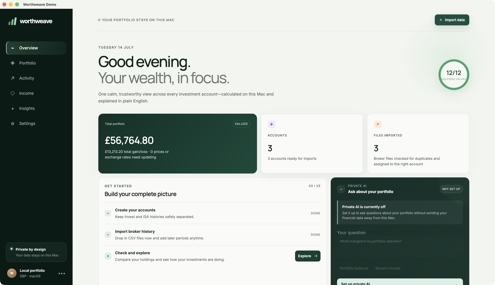
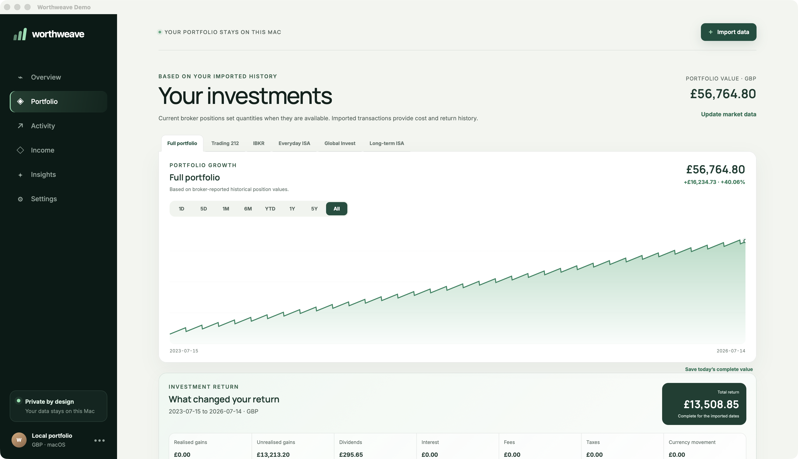

Portfolio tracking for individual investors on Mac
Your investments together.
Without maintaining a spreadsheet.
Hold investments with Trading 212 or Interactive Brokers? Bring your broker history into one app to track holdings, income and performance across accounts.
Spend less time combining exports, updating formulas and separating deposits from investment returns. Worthweave reconstructs your holdings and calculates the reports for you.
Free and open source · Apple Silicon · macOS 13 or later

From broker history to portfolio reports
Three steps to see where you stand.
Import or sync your history
Import Trading 212 or Interactive Brokers CSV exports, or connect supported accounts for read-only updates. Reimporting the same activity does not add duplicate transactions.
See your holdings together
View your investments in one reporting currency, with each broker, account and tax wrapper kept separate. Explore allocation and income without combining worksheets.
Understand your returns
See how realised and unrealised gains, dividends, interest, fees and taxes contributed to your total return. Reports flag missing history, prices or exchange rates.

Before you download
What works today.
- Your Mac
- Apple Silicon, running macOS 13 or later. There is no Windows, Linux or Intel Mac release.
- Trading 212
- CSV imports and read-only API connections for Invest and Stocks and Shares ISA accounts. Each connected account needs its own API key.
- Interactive Brokers
- CSV imports and IBKR Flex Web Service connections. For sync, you need a Flex token and a correctly configured, single-account Activity Flex Query.
- Robinhood
- UK and US account types can be tracked in the account model, but transaction imports and sync are not available yet.
- Prices and currencies
- Choose your reporting currency during setup. Configure prices and investment categories after import. ECB exchange rates refresh automatically; optional Massive integration supplies US stock prices with your own API key. Manual prices and rates are also supported.
- Optional AI
- Portfolio reports work without AI. Explanations require a separate local runtime, Rapid-MLX or Ollama, and a model suitable for your Mac.
Storage and connections
Your portfolio history is stored locally on your Mac.
CSV files are parsed locally, and holdings and reports are calculated on your Mac. Broker and market-data credentials are stored in macOS Keychain. The local portfolio database is not encrypted at rest; password-protected backups are encrypted.
The app makes network requests for connected broker accounts, ECB exchange rates, optional Massive price refreshes and app updates. Broker connections use read-only access. Optional AI talks to a runtime on your own machine.
Try Worthweave
Start with your broker history.
Free, open-source portfolio analysis for Apple Silicon Macs.
Download from GitHub Worthweave provides analysis, not financial advice.